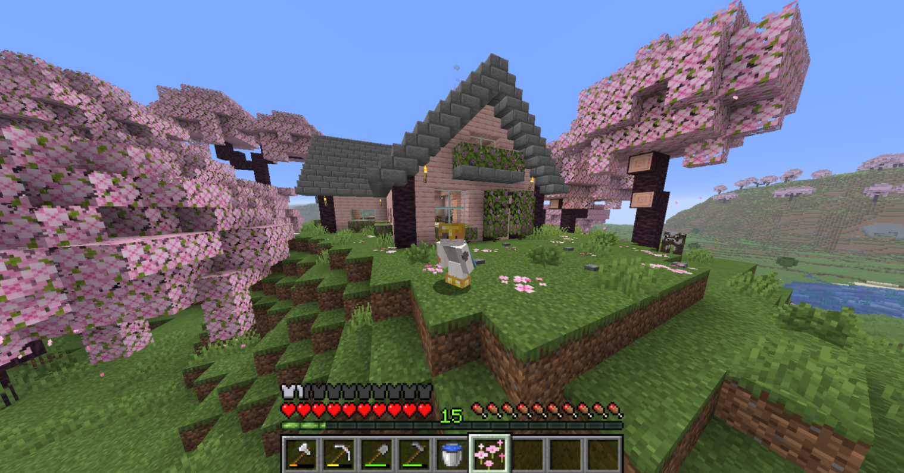
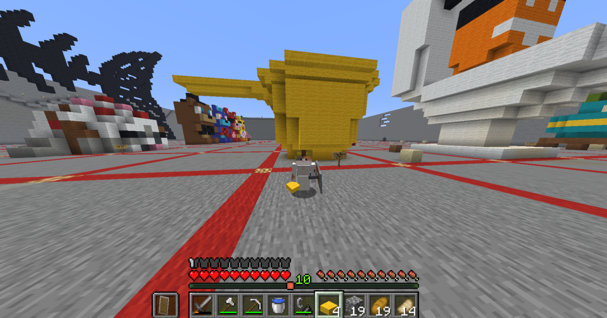

Yooo these are my Minecraft builds! This house took forever to build... It's tabo time!!!
For my item of cultural significance, I chose to build a tabo! A tabo is a traditional handheld water dipper used for personal hygiene, bathing, and general household cleaning in the Philippines and Southeast Asia. I wanted to build a tabo because it symbolizes cleanliness, resourcefulness, and comfort. I also grew up having multiple of them in my house, learning at a young age on how to use them. Overall, I thought it was cleaner and more practical than just using toilet paper. There's also my cute little survival base! #proud

